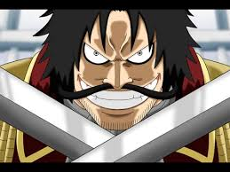
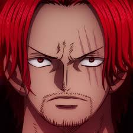
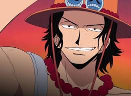

All About Luffy
Swept up in the era's passion for piracy, Monkey D. Luffy sets out to become a pirate...but not just any pirate. At a young age, he sets the goal to become King of the Pirates! Helping him in this quest is the power of the Gum-Gum Devil Fruit he accidentally ingests as a child. The fruit instantly transformed him into a rubber person!
Influences
Gol D. Roger
The original King of the Pirates and inspiration for the Golden Pirate Era, at his execution Roger encourages all to take his mantle by finding his ship, the One Piece.
Red-Haired Shanks
A father figure to Luffy, pirate captain Shanks (and his crew) befriended adolescent Luffy and even saved his life. Shanks is the source of the Gum Gum Devil Fruit Luffy ingests and the straw hat Luffy cherishes.
Portgas D. Ace
Luffy's older brother Ace is a powerful pirate and crew member of Blackbeard's priate ship. Ace's dominance is aided by his Flame-Flame Devil Fruit power.